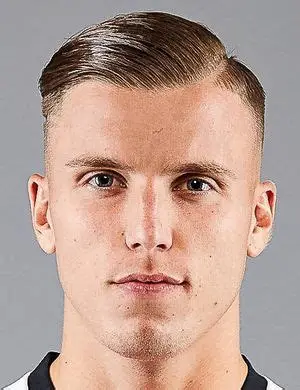
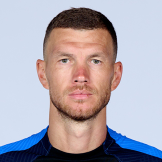
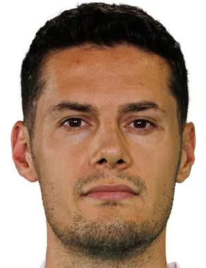
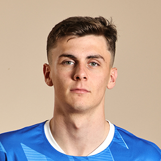
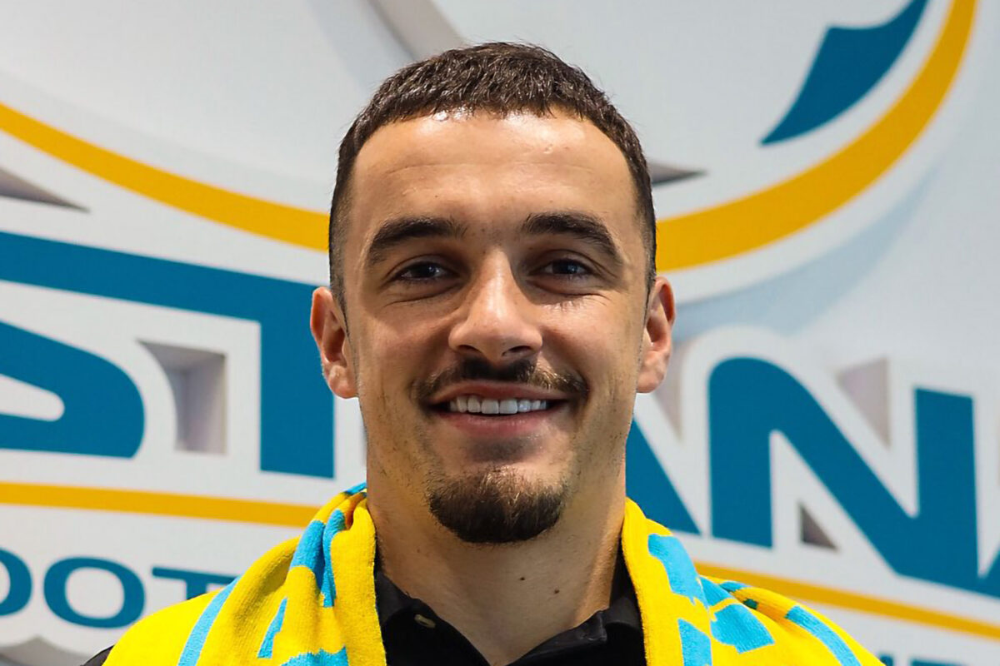
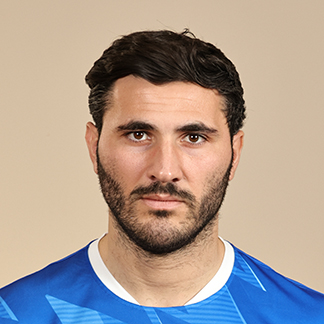
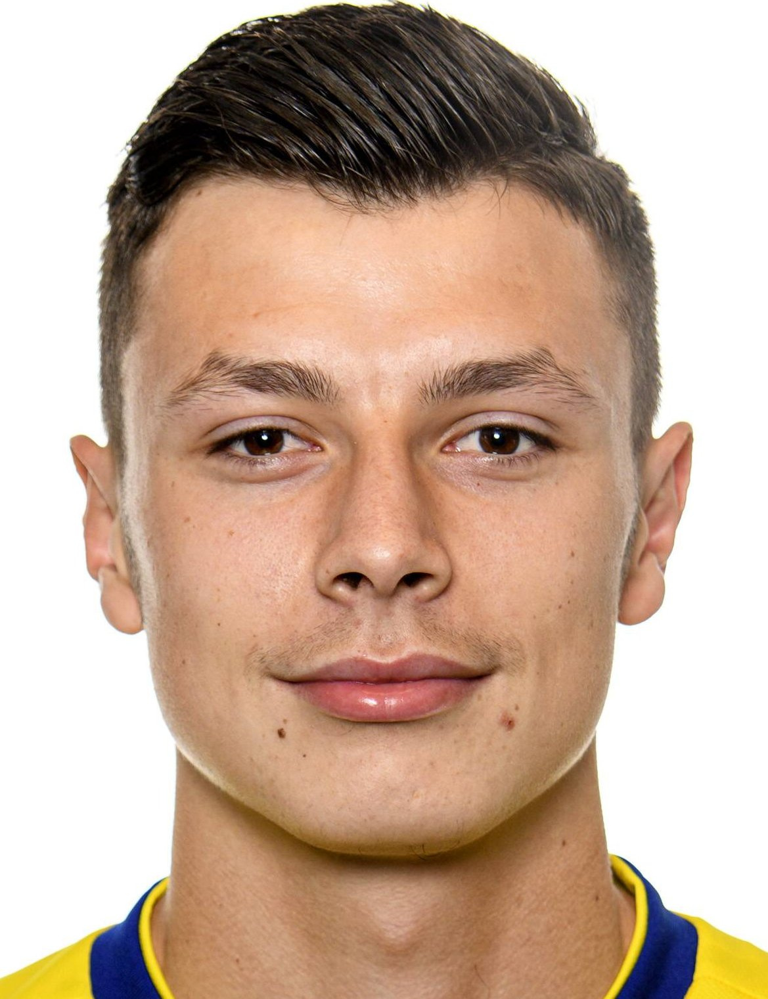
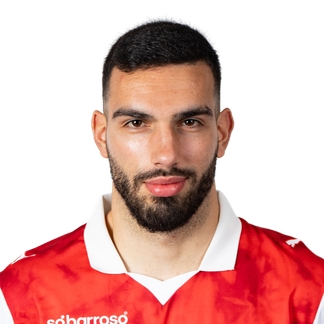
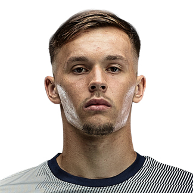
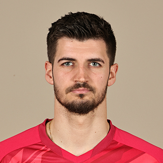

BOSNIA Y HERZEGOVINA
Bosnia y Herzegovina regresa a una Copa del Mundo con una generación competitiva que busca representar con orgullo al fútbol balcánico.

Formación 4-3-3










Bosnia y Herzegovina consiguió su clasificación tras una destacada campaña europea, demostrando solidez y talento colectivo.
El equipo combina experiencia, disciplina táctica y jugadores con presencia en importantes ligas europeas.
Superar la fase de grupos y consolidarse entre las selecciones competitivas del continente europeo.
UEFA
Zmajevi (Los Dragones)
2014
Edin Džeko
BOSNIA Y HERZEGOVINA
VS
CANADÁ

BMO Field, Toronto
BOSNIA Y HERZEGOVINA
VS
SUIZA

BC Place, Vancouver
BOSNIA Y HERZEGOVINA
VS
QATAR

BC Place, Vancouver

La selección es conocida como "Los Dragones".

Edin Džeko es uno de los futbolistas más importantes de su historia.

La mayoría de sus jugadores militan en ligas europeas.

Debutó en una Copa del Mundo en Brasil 2014.

Busca superar por primera vez la fase de grupos.